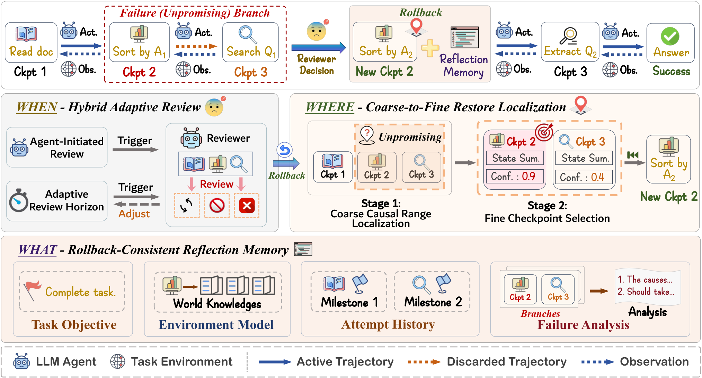

01研究背景与问题定义
长任务代理的一次错误，可能同时改变外部世界和后续判断的依据。例如，某项操作消耗了后续必需的资源，代理即使意识到计划有误，也未必能在当前状态下补救。只追加一句反思不能让资源恢复；从头重启又要重做正确的前半程。恢复到中途检查点可以保住部分进展，却带来另一层问题：哪些失败经验可以保留，哪些“已经完成”的事实必须随动作一起撤销？
这里需要区分三种东西：环境的真实状态、当前分支的交互历史，以及从过去尝试提炼的经验。检查点恢复前两者，经验则可能跨尝试保留。若把失败分支原样塞回提示，旧分支里的位置、库存和进度会重新污染决策；若连经验一起清空，代理又可能重复同一条死路。因此，恢复不只是找一个旧步号，还要重新规定信息跨越这个时间边界后的含义。
| 决策 | 判断失误的后果 | RIR 打开的控制能力 |
|---|---|---|
| When · 何时干预 | 过早打断有效探索；过晚让错误继续扩散。 | 结合代理主动请求与外部定时审查，决定继续还是恢复。 |
| Where · 恢复到哪里 | 太浅仍留下失败前提；太深损失有效进展。 | 根据失败原因选可重新完成任务的检查点，尽量保留正确前缀。 |
| What · 保留什么 | 丢失经验会重复失败；保留旧状态会误认当前进度。 | 分开保存环境知识、历史里程碑与有条件的失败解释。 |
RIR（Rollback-Induced Reflection，回滚诱导反思）把这三个决策组合成推理时的恢复控制。它不更新基础模型参数，而是在已有任务执行循环外加入审查、选点和记忆修补：先判断当前路线是否值得继续，再决定撤回哪一段动作，最后从即将被放弃的后缀中提炼经验。世界和当前历史回到过去，获得的认识则有选择地留下。 选点决定哪些动作被撤销，也就决定哪些信息需要重新解释，Where 与 What 因而不能各自独立处理。
这种收益有明确前提：运行环境必须能保存并恢复相关状态，模型也必须能区分稳定规律与特定分支上的观察。RIR 用额外的诊断推理和重做动作，换取纠正错误路径的机会；它提供恢复的控制方式，效果仍取决于判断质量与剩余执行预算。
02方法与技术路线
基础代理照常根据目标、当前历史和反思记忆选择动作。RIR 维护两类寿命不同的记录：可被回退的检查点 Cᵢ＝(sᵢ,hᵢ)，以及放在检查点之外的反思记忆 M。恢复控制按“审查 → 选点 → 修补记忆 → 恢复现场”运行，只有审查批准且回退预算允许，才进入后面三个步骤。
论文原图：When / Where / What 如何共同作用于轨迹

When：主动请求与自适应审查共享一个判定入口
代理可以调用 rollback，但这个工具只表达“希望检查当前路线”，不会直接改变环境。另一条入口由控制器提供：距上次审查达到当前间隔 L 时，即使代理没有意识到问题，也会检查轨迹。两条入口调用同一个 reviewer，避免把代理的一次犹豫直接变成回退，同时为代理未察觉的停滞提供外部干预机会。
reviewer 接收目标、活跃历史、反思记忆，以及重复动作、无效步骤、状态循环等轻量执行信号。它用 LLM 判断输出是否回退、紧迫度 ρ、失败诊断 f 和新增环境知识 ΔE；这些信号只是诊断依据，不构成确定性的死路证明。ΔE 在每次审查后都并入 E，即使本次决定继续，也可以留下新学到的环境规律。
ρ∈[0,1]。高紧迫度使下次审查更早发生，低紧迫度允许更长的连续探索。该规则控制审查频率，是否真的回退仍由 reviewer 判定。
审查批准后，框架还检查累计回退次数是否低于上限；预算用尽时不能继续恢复。成功回退后重置审查间隔，否则依据 ρ 调整下一次间隔。任务最终回答会终止轨迹，整体运行还受代理调用预算约束。由此，RIR 可以选择较少干预，但额外的审查、选点与反思调用仍需单独计入推理开销。
Where：先缩小因果范围，再找可重新进入的状态
长历史里的失败不一定对应一个孤立的“错误动作”：前面漏掉的准备步骤，可能很久之后才使任务无法继续；相邻检查点也可能几乎没有区别。因此，粗定位器先读取目标、轨迹、记忆与诊断 f，提出可能包含决定性错误或缺失前提的历史区间 [l,u]。它先回答问题发生在哪一段，避免一开始就要求模型从整条轨迹猜中单一步号。
细选择器随后比较区间内可恢复检查点的紧凑状态摘要，包括已完成子目标、位置和关键资源。摘要来自检查点，不是另一份持续更新的记忆。选择原则是先解除当前障碍，再从合格状态中选最新的一个：回得太浅可能保留坏前提，回得太深则增加重做。恢复点因此应是能改变后续可行性的重入位置，而不只是被模型标记为错误的那一步。
论文用 Escape(检查点摘要,f) 表示恢复后能否移除诊断出的失败条件，实际由 LLM 联合比较候选摘要，返回恢复点、理由和置信度。系统没有对每个候选完整执行一次未来轨迹，置信度也不是可完成性的验证结果。粗定位若排除了真正需要回去的位置，细选择便无法在其范围内补救；诊断质量是两阶段选择的共同依赖。
What：把可复用知识与当前分支状态分开
只有确定恢复点 r，才知道将放弃哪段后缀 τᵣ:ₜ。Reflection Patcher 在恢复前检查这段后缀，提炼历史里程碑并生成新的失败解释。与把所有反思追加成一段叙述不同，RIR 对四类内容规定不同的更新方式，防止“曾经完成”被直接写成“现在已经完成”。
| 组成 | 保存的内容 | 更新及有效性边界 |
|---|---|---|
| G · Task Objective | 任务最终目标。 | 任务内固定；回退不改变目标。 |
| E · Environment Model | 已观察事实、证据支持的排除、动作或工具的能力。 | 每次审查累计 ΔE；依赖被撤销动作的观察保留出处，并标记需重新核验。 |
| H · Attempt History | 历史尝试的里程碑和已发现路线。 | 尝试结束或被放弃时累计；不代表新分支已获得相同资源或进度。 |
| F · Failure Analysis | 最近放弃分支在当时条件下失败的原因。 | 每次回退替换；跨尝试得到支持的模式才提升为 E 中可复用知识。 |
E 通过结构化语义通道接收信息，区别观察、排除和工具能力；条件性观察还要带着来源与待核验地位保留。这样既能记住尝试获得的线索，又不必宣称恢复后的世界仍然满足旧事实。H 允许复用一条曾经走通的路线，F 则把失败原因限制在当时的条件下，避免每次局部失败都变成永久禁令。分类和有效性判断仍由模型完成，结构并不能自动保证写入内容正确。
更新后的 M⁺ 替换系统提示中的旧反思记忆块，而不是把整份新旧记忆逐次叠加。不过，E 和 H 会累计，因此“替换提示块”不等于记忆大小恒定。四类记忆都不充当当前分支状态的权威记录：位置、资源和实际进度由活跃历史及恢复现场提供。
不对称恢复：先提炼经验，再撤回动作及其上下文
(sₜ,hₜ,M) → (sᵣ,hᵣ,M⁺)
s 是环境状态，h 是分支交互历史，φ 是按字段更新记忆的过程。恢复深度 k＝t−r 决定放弃的后缀，也决定从哪段经历提炼知识。
运行顺序很关键：先从即将失去的后缀形成 M⁺，再恢复选定检查点的环境和历史，最后带着更新记忆继续任务。只恢复环境却留下后缀，会使上下文仍描述另一个世界；只截断历史却不恢复环境，则会使代理失去对真实变化的记录。GAIA 实验还恢复代理创建或修改的工作区文件，使受控文件状态与恢复后的历史对齐。哪些外部状态可恢复，取决于具体环境接口。
状态示例：回到取道具之前，哪些经验还能继续使用
说明性示例，依据论文的检查点与记忆语义构造；不是论文原始轨迹或提示格式。
目标：把道具送到目标房间。
进入另一条通道后陷入死路。
这时“持有道具”对旧分支成立。
统一恢复空间：表达能力的保证与控制器效果有不同边界
论文把恢复表示为一对选择：回退深度 k，以及允许跨边界留下的记忆 M⁺。在相同记忆更新空间下，只能重启、固定深度或有限深度回退的策略，属于允许更多深度选择的策略空间的子集。因此，在基础代理、可见信息、恢复机会和预算记账规则相同时，较大策略空间的最优成功概率不会更低。这个结论说明 RIR 能表达受限策略，也能表达更多选择；它不保证实际 LLM selector 会找到最优恢复点，更不意味着额外诊断没有代价。
正文给出了核心流程和状态语义，但当前 v3 版本未附其引用的 reviewer、selector 详细提示与补充实现。因此，可依据正文解释这些决策如何产生，不能进一步假定存在置信度阈值、候选逐点试跑或固定重试规则。
03实验设计与结果分析
实验覆盖 ALFWorld 的具身交互、ScienceWorld 的科学任务与 GAIA 的开放工具任务。成功率 SR 衡量任务完成；ScienceWorld 另报归一化密集奖励 DR，反映部分进展。GAIA 由独立 Qwen3.8-Max judge 判断最终答案的语义等价，它不参与任务执行或恢复。每组 acting agent 与 RIR 各模块使用相同底座，比较方法对齐任务接口与交互预算，但这并未对齐所有辅助推理开销。
完整方法的收益是否跨底座成立？
| 基础模型 | 该底座最强对照 | 对照平均 SR | RIR 平均 SR | 绝对增益 |
|---|---|---|---|---|
| Qwen3-14B | Reflexion | 43.91 | 47.00 | +3.09 pp |
| DeepSeek-V3 | ReAct | 62.86 | 69.43 | +6.57 pp |
| Qwen3.8-27B | Reflexion | 73.50 | 76.54 | +3.04 pp |
三个底座的平均成功率均提高，九个底座—基准组合中有八个由 RIR 领先，说明收益覆盖了不同任务与模型。这里每行选的是该底座平均成绩最强的对照，不能理解为一个固定基线的三次重复。平均值也不是把三个数据集的样本合并后统计；它给每个基准相同权重，不能直接解释为所有任务总体的成功概率。
需要保留的例外是 Qwen3.8-27B 的 GAIA：RIR 为 50.66%，低于 Reflexion 的 52.63%，相差 1.97 个百分点。作者认为 24 步交互预算限制了恢复后的再探索空间，这是一种合理解释，尚未由单独的预算对照证实。恢复必须留下足够时间重走路径，因此更强的状态控制也可能在短预算下让收益无法兑现。
成功率提升付出了多少额外工作？干预更频繁就更好吗？
ScienceWorld / DeepSeek-V3 的消融同时报告成功率、交互步数和辅助模型调用，能把效果与成本放在一起判断。辅助调用包括恢复模块的推理，与代理执行任务的交互步数分开统计。
| 配置 | SR（%）↑ | 交互步数 | 执行回退 | 辅助 LLM 调用 |
|---|---|---|---|---|
| Reflection only | 70.48 | 36.5 | 不启用 | 8.12 |
| Rollback only | 69.37 | 46.7 | 1.30 | 11.82 |
| Hybrid fixed | 69.00 | 46.6 | 1.17 | 11.32 |
| RIR · Hybrid adaptive | 76.75 | 42.4 | 0.92 | 9.85 |
相对只反思，完整方法提高 6.27 个百分点，同时增加 5.9 个交互步数（约 16.2%）和 1.73 次辅助调用（约 21.3%）。这是用更多工作换取更高完成率的运行点。只回退反而比完整方法更费步数和辅助调用，成功率还低 7.38 个百分点，支持恢复现场与保留经验具有互补作用，不能用“有撤销按钮就够了”解释结果。
固定混合触发比完整方法有更多回退、更多辅助调用，成功率却更低；审查次数也从完整方法的 7.08 次升到 7.79 次。这使“只是增加干预次数”的解释不充分，更支持审查时机影响恢复质量。不过，结果验证的是这一混合控制设置，不能进一步断言自适应调度在任何触发策略下都更好，也不能由组件消融直接证明四类记忆各自的因果贡献。
选恢复点是否优于从头重来或一次性猜步号？
保持审查策略与反思记忆不变，仅改变恢复点选择，更接近对 Where 的检验。下表选择三个能执行回退的变体，避免把状态恢复的存在与选点策略的差异混在一起。
| 选择方式 | SR（%）↑ | DR ↑ | 交互步数 | 回退次数 |
|---|---|---|---|---|
| Restart · 回到起点 | 74.91 | 0.795 | 45.6 | 1.29 |
| Direct selection · 单阶段选点 | 73.43 | 0.807 | 45.2 | 0.99 |
| RIR · 粗到细选点 | 76.75 | 0.813 | 42.4 | 0.92 |
粗到细选择在这组变体中同时取得最高完成率、最高部分进展和最少步数，符合“移除障碍并保住有效前缀”的设计目标。相对从头重启，成功率高 1.84 个百分点、少用 3.2 步；相对单阶段选择，成功率高 3.32 个百分点。这里减少的是环境交互与回退次数，表中没有分列三种选择器的辅助调用成本，不能据此判定粗到细的总推理更便宜。
这些结果支持所实现控制器的实用价值，但没有直接测量 Escape 判断准确率、回滚后事实冲突率，或结构化记忆相对等预算普通文本反思的收益。因而“联合控制有效”有实验支持，“收益具体来自更准确的因果诊断与知识有效性管理”仍是需要进一步拆开的机制解释。
04贡献、局限与综合评价
核心贡献：把回滚做成带信息边界的恢复决策
RIR 的概念贡献，是把恢复的时机、位置与保留信息放进同一个控制问题。尤其值得保留的是：失败分支中的某句话可以是有价值的历史证据，却不再是当前世界的事实。即使将来替换 reviewer 或选点模型，这一状态语义仍然成立；只要系统允许撤销动作，就需要处理保留知识与恢复现场之间的关系。
方法上，论文用混合自适应审查、粗到细选点与字段化记忆实现了这一控制。跨底座平均收益说明整套方案有用；ScienceWorld 的组件与选点消融进一步表明，恢复现场、保留经验和控制时机各有作用。理论上的策略空间包含关系，则说明联合表示能容纳受限恢复方式，其价值在于统一问题表达，不能替代对实际控制器的实验评价。
最关键的证据缺口：经验保留下来以后，是否更可信？
正文的状态分离设计针对了一个真实问题，但消融主要比较“有无回退”“有无反思”与不同触发、选点方式，没有固定恢复轨迹后单独比较结构化记忆和普通文本记忆。因此，现有提升也可能主要来自更好的重入位置或额外诊断推理；尚不能把全部收益归因于减少了过期事实污染。这一缺口限制了对收益来源的判断；整套方案的完成率提升仍有实验支持。
这一缺口还对应一个更深的风险：E 会跨尝试累计，而选点又依赖同一套记忆与失败诊断。若模型把“在某些条件下失败”误写成“永远不可行”，之后可能一边排除有效路线，一边反复选错恢复点。F 的替换与观察的待核验标记能够约束信息形式，却没有独立验证器保证语义正确。保留经验既可能减少重复错误，也可能让错误解释更持久。
更有区分力的后续检验，是固定 reviewer、恢复点和总推理预算，只改变记忆表达与重新核验规则，同时统计恢复后的事实冲突、有效路线误排除、重复死路及成功率。若成功率变化伴随冲突率下降，才更直接支持知识有效性管理这一机制；若等预算文本反思也能达到相同结果，则应把主要贡献更多归于恢复控制的组合方式。
恢复能力与预算共同限定了适用范围
实验成立于可以恢复相关环境状态的系统。GAIA 对工作区文件的恢复说明，撤回对话并不足以恢复工具任务；真实任务若还有未被快照覆盖的外部变化，历史与世界可能无法完全对齐。另一方面，GAIA 的短预算例外提醒我们，诊断和回退之后仍需完成任务。更大的恢复选择空间只有在控制器能找到有效操作、且预算足以执行时，才可能转化为实际收益。
综合现有证据，RIR 建立了“恢复执行现场，同时有条件地保留失败认识”的可用性，并给出了比单纯撤销动作更清晰的设计边界。最值得学习的是把经验的时间与条件写进恢复过程；尚待证明的，是这套信息约束在多大程度上独立改善了诊断可靠性，以及其收益能否覆盖完整推理与状态恢复成本。